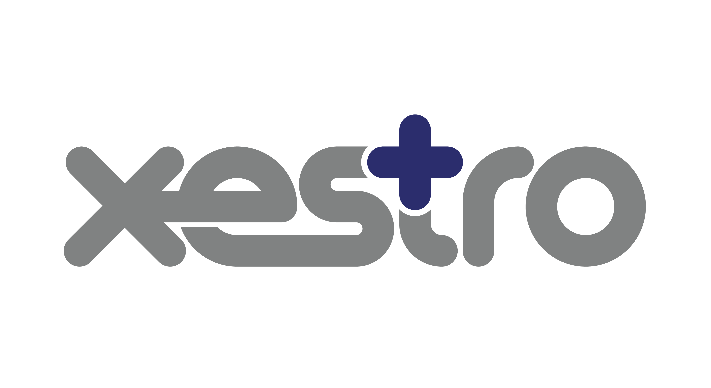

PVO delivers non-clinical support across systems, workflow, records, administration, automation, and day-to-day clinic operations.
Inbox handling, process tidy-ups, task routing, admin cleanup, template support, and practical improvements to daily clinic operations.

Setup help, workflow optimisation, template support, historical records access, and practical cleanup for clinics using Xestro.
View Xestro sectionSecure scanning of legacy medical records with OCR, folder structuring, optional upload support, and chain-of-custody handling.
Support can include general admin assistance, backlog cleanup, inbox and communication handling, document preparation, workflow organisation, and practical day-to-day support that reduces pressure on practice staff.
PVO assists with healthcare-facing software and operational systems, especially where practices need a practical translator between everyday clinic work and technical setup.
Legacy paper files can be converted into searchable digital records through structured scanning programs designed to minimise disruption to the clinic.
PVO incorporates practical safeguards around access control, backups, privacy-aware workflows, documentation, and administrative handling of sensitive information.
PVO support is tailored to the workload, software environment, and operational reality of the clinic. You do not need to pretend your practice is neat and fully documented before asking for help.
Contact PVO Visit Xestro